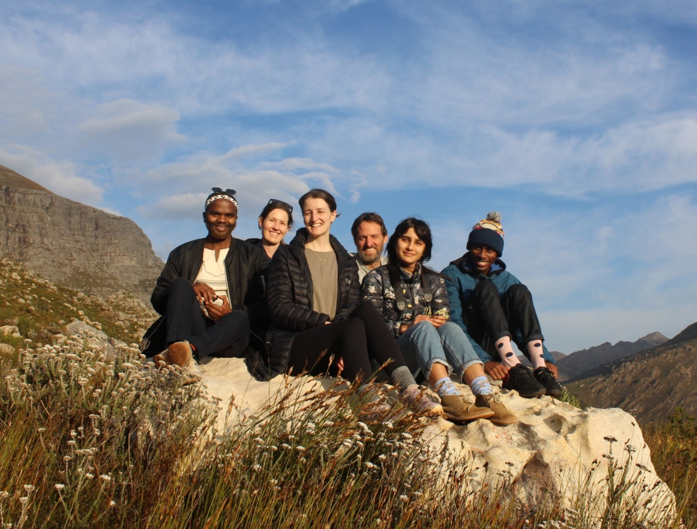

Plant Ecology Lab Manual
1 Welcome!

…and this is the lab!!!
The focus of our work is to improve our fundamental understanding of African terrestrial ecosystems and translate that knowledge into tools to assist the management and conservation of their biodiversity and contributions to people. More about our group’s research activity can be found on our website.
This manual is intended to provide an overview for lab members and others about how we do our work, and our expectations for our team. It’s also a space to document institutional knowledge and for important information about procedures and available resources. If you have suggestions for additions or changes, please contact Jasper (jasper.slingsby@uct.ac.za) or make a pull request.
The content (and Quarto template) is largely borrowed and modified from The Fay Lab’s lab manual, which was developed in collaboration with Openscapes. We are extremely grateful to them for all their hard work and for making their efforts openly available! 🙏 🙌 See Quick steps to making a copy of the Fay Lab lab manual and publishing it should you want to make your own!
 < link to this book’s GitHub repository. You are also welcome to copy and modify this lab manual under the license conditions below. Easiest is to follow the instructions as per the Fay Lab above but substitute in this repository link.
< link to this book’s GitHub repository. You are also welcome to copy and modify this lab manual under the license conditions below. Easiest is to follow the instructions as per the Fay Lab above but substitute in this repository link.
 This lab is licensed under a Creative Commons Attribution 4.0 International License.
This lab is licensed under a Creative Commons Attribution 4.0 International License.